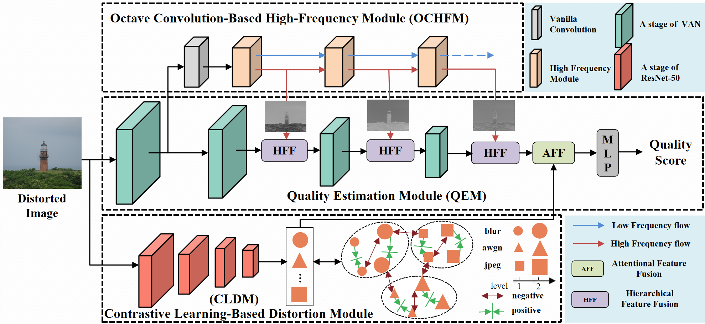
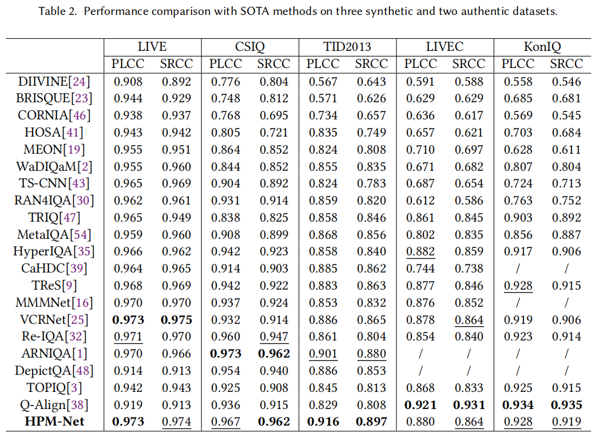
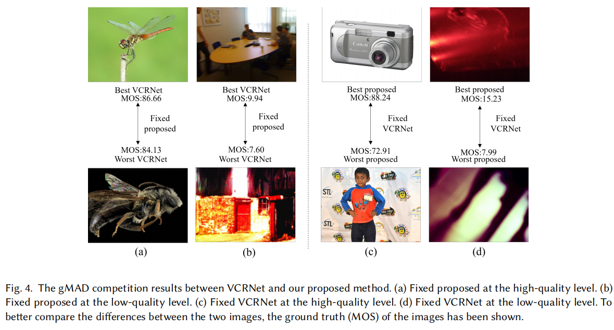

Blind Image Quality Assessment via a Hierarchical Perceptual Modulation Network
ACM Transactions on Multimedia Computing, Communications, and Applications (TOMM), 2026
Li Yu
Yifan Bao
Junyang Li
Wei Zhou
Zhaoqing Pan
Moncef Gabbouj*
* Corresponding author
Abstract
-
grade Blind image quality assessment (BIQA) is crucial for perceptual optimization in image processing. To better align objective quality predictions with human perception, researchers have designed BIQA models inspired by the frequency-sensitive characteristics of the human visual system (HVS). However, existing methods usually treat high-frequency (HF) cues as features for direct quality score regression, rather than exploiting them as perceptual modulation signals. In HVS, HF cues play a dynamic role in perceptual modulation, guiding the processing and integration of information across hierarchical stages. Inspired by this, we propose a hierarchical perceptual modulation network (HPM-Net) for BIQA. In the proposed network, we utilize an octave convolution-based high-frequency module (OCHFM) to extract HF cues and then hierarchically modulate them into the quality estimation module through hierarchical feature fusion (HFF). In addition, a contrastive learning-based distortion module (CLDM) is integrated with the modulated features through an attentional feature fusion mechanism. Extensive experiments on five benchmarks show that HPM-Net achieves leading or competitive performance compared to state-of-the-art methods in the majority of datasets with both synthetic and authentic distortions.
Highlights
-
grade We propose a novel perspective in utilizing HF cues for BIQA: from using it for direct quality regression to employing it as a perceptual modulation signal. Unlike methods that map handcrafted HF metrics directly to scores, our method leverages HF cues to guide and reweight the hierarchical processing of spatial features, following a perceptually motivated design.
-
grade We realize this paradigm via HPM-Net, which includes an OCHFM for HF feature extraction, a CLDM for distortion-aware representation learning, and the HFF for attention-guided integration.
-
grade Extensive experiments on five databases demonstrate that HPM-Net achieves leading or competitive performance across synthetic and authentic distortion datasets.
Network Architecture

Results

Visualization

Citation
@article{yu2026hpmnet,
title={Blind Image Quality Assessment via a Hierarchical Perceptual Modulation Network},
author={Yu, Li and Bao, Yifan and Li, Junyang and Zhou, Wei and Pan, Zhaoqing and Gabbouj, Moncef},
journal={ACM Transactions on Multimedia Computing, Communications, and Applications},
year={2026},
doi={10.1145/3840393}